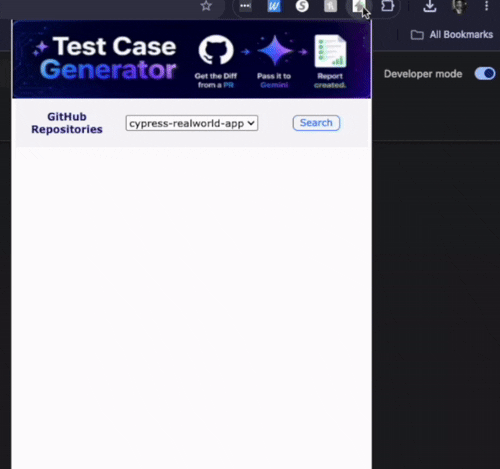
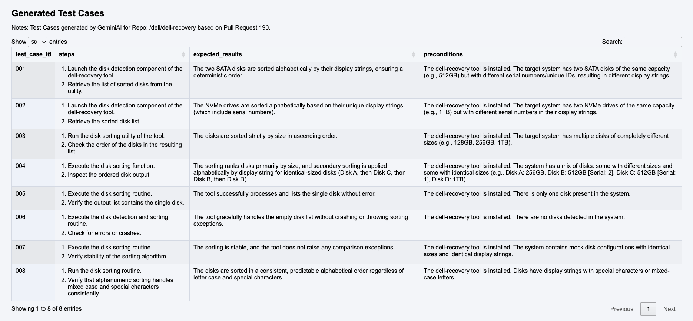

In my previous post I outlined the process of retrieving a diff for a PR in GitHub and passing it to an LLM to generate
detailed test cases based on the pull request. Shortly afterward, I had the idea of bundling the entire end-to-end
process into a Google Chrome extension.
The last time I built a Chrome extension...
A few years ago, while working as an SDET at a healthcare company, I built a Chrome extension used internally by
Quality Engineers and Developers across teams. It solved the lengthy, cumbersome process of generating internal
serial numbers — required for testing purchase and product registration workflows in lower environments. By
leveraging a handful of internal APIs, the tool reduced that process to two clicks and under 15 seconds.
Fast forward to present day...
Building this extension was a different challenge. Chrome extensions don't give you much UI real estate, and I
needed to render test cases with detailed steps, expected results, and preconditions — not exactly a small amount
of content. Cramming all of that into a popup felt like the wrong approach, so I decided the results should instead
be downloaded locally, where they'd have room to breathe.
That decision lined up well with the goal of the tool itself: use AI, via an API, to generate test cases from a
GitHub diff, giving Quality Engineers a fast, no-nonsense way to see where to focus when testing a pull request.
The extension just needed to get out of the way and hand off the results.
Challenges
Limited real estate means the design has to be thoughtful and intentional. As much as I secretly wish I were a UI
designer, I struggled early on with the layout. How do I fit in:
- A way for the user to select from a collection of repositories
- A clear, low-friction trigger to kick off diff retrieval and test case generation
- Feedback while the diff is being fetched and processed by Gemini
The Final Product

A view of the downloaded HTML file that consists of the generated test cases.

Conclusion
I can honestly say I am happy with how this project turned out.There is much to be desired in regards to the design, so I may revisit this again the future.
Im grateful that Gemini AI has a free tier, although it is rate limited as one would expect. The good part -- they have numerous models to choose from, each with their own rate limits. Perhaps the next iteration will expose the various models for selection in the UI. The possibilities are endless.